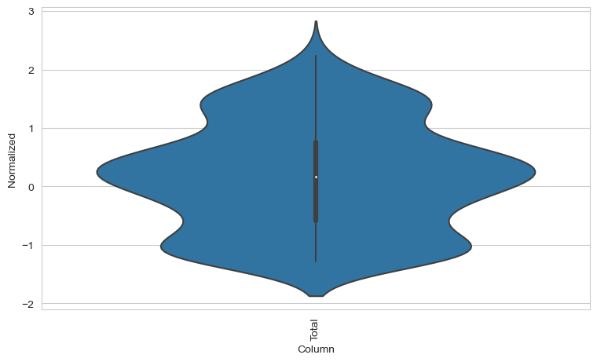

import tensorflow as tf
from tensorflow.keras.callbacks import CSVLogger, EarlyStopping
import matplotlib as mpl
import matplotlib.pyplot as plt
import numpy as np
import os
import pandas as pd
import seaborn as sns
import time
import gc
import sys
from statsmodels.graphics.tsaplots import plot_acf
from statsmodels.graphics.tsaplots import plot_pacfRedes neuronales para la serie de tiempo de Exportaciones
print(f"Tensorflow Version: {tf.__version__}")
print(f"Pandas Version: {pd.__version__}")
print(f"Numpy Version: {np.__version__}")
print(f"System Version: {sys.version}")
mpl.rcParams['figure.figsize'] = (17, 5)
mpl.rcParams['axes.grid'] = False
sns.set_style("whitegrid")
notebookstart= time.time()Tensorflow Version: 2.14.0
Pandas Version: 1.5.3
Numpy Version: 1.23.5
System Version: 3.10.9 | packaged by Anaconda, Inc. | (main, Mar 1 2023, 18:18:15) [MSC v.1916 64 bit (AMD64)]0.1 Datos: Serie de tiempo del total de exportaciones de Colombia 2000 - 2023
# Lectura de la serie
Exportaciones = pd.read_excel("C:/Users/dofca/Desktop/series/datos/Exportaciones.xlsx",
header = 0, usecols = ['Mes','Total']).iloc[96:].reset_index(drop = True).round()
Exportaciones['Total'] = Exportaciones['Total'].astype(int)
Exportaciones| Mes | Total | |
|---|---|---|
| 0 | 2000-01-01 | 1011676 |
| 1 | 2000-02-01 | 1054098 |
| 2 | 2000-03-01 | 1053546 |
| 3 | 2000-04-01 | 886359 |
| 4 | 2000-05-01 | 1146258 |
| ... | ... | ... |
| 277 | 2023-02-01 | 4202234 |
| 278 | 2023-03-01 | 4431911 |
| 279 | 2023-04-01 | 3739214 |
| 280 | 2023-05-01 | 4497862 |
| 281 | 2023-06-01 | 3985981 |
282 rows × 2 columns
0.2 Predicción Univariada
Se desea predecir la variable total de exportaciones (Total) usando los retardos de ella misma.
features = Exportaciones[features_considered] # solo se usará la variable Total en la predicción
features.index = Exportaciones['Mes'] # variable que indica el tiempo (la serie es mensual)
features.head()| Total | |
|---|---|
| Mes | |
| 2000-01-01 | 1011676 |
| 2000-02-01 | 1054098 |
| 2000-03-01 | 1053546 |
| 2000-04-01 | 886359 |
| 2000-05-01 | 1146258 |
0.3 Separación (Entrenamiento-Validación-Prueba) y Normalización.
# partición del conjuntos de datos en entrenamiento, validación y prueba
column_indices = {name: i for i, name in enumerate(features.columns)} # índice = 0
n = len(features) # longitud de la serie (282)
train_df = features[0:int(n*0.7)] # 2000-01 hasta 2016-05
val_df = features[int(n*0.7):int(n*0.9)] # 2016-06 hasta 2021-01
test_df = features[int(n*0.9):] # 2021-02 hasta 2023-06
num_features = features.shape[1]print("longitud dataframe entrenamiento:", train_df.shape)
print("longitud dataframe validación:", val_df.shape)
print("longitud dataframe prueba:", test_df.shape)longitud dataframe entrenamiento: (197, 1)
longitud dataframe validación: (56, 1)
longitud dataframe prueba: (29, 1)# todo el dataframe normalizado por train_mean y train_std
df_std = (features - train_mean) / train_std
df_std = df_std.melt(var_name='Column', value_name='Normalized')
df_std| Column | Normalized | |
|---|---|---|
| 0 | Total | -1.172383 |
| 1 | Total | -1.142863 |
| 2 | Total | -1.143247 |
| 3 | Total | -1.259587 |
| 4 | Total | -1.078732 |
| ... | ... | ... |
| 277 | Total | 1.047816 |
| 278 | Total | 1.207640 |
| 279 | Total | 0.725616 |
| 280 | Total | 1.253533 |
| 281 | Total | 0.897333 |
282 rows × 2 columns
plt.figure(figsize=(9, 5))
ax = sns.violinplot(x = 'Column', y = 'Normalized', data = df_std)
_ = ax.set_xticklabels(features.keys(), rotation=90)
class WindowGenerator():
def __init__(self, input_width, label_width, shift,
train_df=train_df, val_df=val_df, test_df=test_df,
label_columns=None):
# Store the raw data.
self.train_df = train_df
self.val_df = val_df
self.test_df = test_df
# Work out the label column indices.
self.label_columns = label_columns
if label_columns is not None:
self.label_columns_indices = {name: i for i, name in
enumerate(label_columns)}
self.column_indices = {name: i for i, name in
enumerate(train_df.columns)}
# Work out the window parameters.
self.input_width = input_width
self.label_width = label_width
self.shift = shift
self.total_window_size = input_width + shift
self.input_slice = slice(0, input_width)
self.input_indices = np.arange(self.total_window_size)[self.input_slice]
self.label_start = self.total_window_size - self.label_width
self.labels_slice = slice(self.label_start, None)
self.label_indices = np.arange(self.total_window_size)[self.labels_slice]
def __repr__(self):
return '\n'.join([
f'Total window size: {self.total_window_size}',
f'Input indices: {self.input_indices}',
f'Label indices: {self.label_indices}',
f'Label column name(s): {self.label_columns}'])0.4 Split
Dada una lista de entradas consecutivas, el método split_window las convertirá en una ventana de entradas y una ventana de etiquetas.
def split_window(self, features):
inputs = features[:, self.input_slice, :]
labels = features[:, self.labels_slice, :]
if self.label_columns is not None:
labels = tf.stack(
[labels[:, :, self.column_indices[name]] for name in self.label_columns],
axis=-1)
# Slicing doesn't preserve static shape information, so set the shapes
# manually. This way the `tf.data.Datasets` are easier to inspect.
inputs.set_shape([None, self.input_width, None])
labels.set_shape([None, self.label_width, None])
return inputs, labels
WindowGenerator.split_window = split_window0.5 Transforma nuestros objetos a tipo tensorflow
Tamaño del lote batch size = 32
def make_dataset(self, data):
data = np.array(data, dtype=np.float32)
ds = tf.keras.utils.timeseries_dataset_from_array(
data=data,
targets=None,
sequence_length=self.total_window_size,
sequence_stride=1,
shuffle=False,
batch_size=32,)
ds = ds.map(self.split_window)
return ds
WindowGenerator.make_dataset = make_dataset@property
def train(self):
return self.make_dataset(self.train_df)
@property
def val(self):
return self.make_dataset(self.val_df)
@property
def test(self):
return self.make_dataset(self.test_df)
@property
def example(self):
"""Get and cache an example batch of `inputs, labels` for plotting."""
result = getattr(self, '_example', None)
if result is None:
# No example batch was found, so get one from the `.train` dataset
result = next(iter(self.train))
# And cache it for next time
self._example = result
return result
WindowGenerator.train = train
WindowGenerator.val = val
WindowGenerator.test = test
WindowGenerator.example = example1 Definir las gráficas para visualizar lo que se desea predecir en términos de las entradas
def plot(self, model=None, plot_col='Total', max_subplots=3):
inputs, labels = self.example
plt.figure(figsize=(12, 8))
plot_col_index = self.column_indices[plot_col]
max_n = min(max_subplots, len(inputs))
for n in range(max_n):
plt.subplot(max_n, 1, n+1)
plt.ylabel(f'{plot_col} [normed]')
plt.plot(self.input_indices, inputs[n, :, plot_col_index],
label='Inputs', marker='.', zorder=-10)
if self.label_columns:
label_col_index = self.label_columns_indices.get(plot_col, None)
else:
label_col_index = plot_col_index
if label_col_index is None:
continue
plt.scatter(self.label_indices, labels[n, :, label_col_index],
edgecolors='k', label='Labels', c='#2ca02c', s=64)
if model is not None:
predictions = model(inputs)
plt.scatter(self.label_indices, predictions[n, :, label_col_index],
marker='X', edgecolors='k', label='Predictions',
c='#ff7f0e', s=64)
if n == 0:
plt.legend()
plt.xlabel('Time [h]')
WindowGenerator.plot = plot2 Configuración para el ajuste de los modelos
# Definimos número de épocas necesarias y funciones de pérdida
MAX_EPOCHS = 200
def compile_and_fit(model, window, patience=2): #patiences como el número de épocas que espera antes de parar
# Para evitar sobreajuste
early_stopping = tf.keras.callbacks.EarlyStopping(monitor='val_loss',
patience=patience,
mode='min')
model.compile(loss=tf.losses.MeanSquaredError(),
optimizer=tf.optimizers.Adam(),
metrics=[tf.metrics.MeanAbsoluteError()])
history = model.fit(window.train, epochs=MAX_EPOCHS,
validation_data=window.val,
callbacks=[early_stopping])
return history3 Modelos para predecir (1 paso adelante)
3.1 1. Modelo base (Naive)
# modelo base. Retorna como predicción del siguiente paso, la predicción actual.
class Baseline(tf.keras.Model):
def __init__(self, label_index=None):
super().__init__()
self.label_index = label_index
def call(self, inputs):
if self.label_index is None:
return inputs
result = inputs[:, :, self.label_index]
return result[:, :, tf.newaxis]Se entrena el modelo usando el conjunto de datos single_step_window.
baseline = Baseline(label_index=column_indices['Total'])
baseline.compile(loss=tf.losses.MeanSquaredError(),
metrics=[tf.metrics.MeanAbsoluteError()])
val_performance = {}
performance = {}
val_performance['Baseline'] = baseline.evaluate(single_step_window.val)
performance['Baseline'] = baseline.evaluate(single_step_window.test, verbose=0)Se crea una ventana amplia para visualizar el comportamiento del modelo:
3.2 2. Modelo lineal
3.3 3. Modelo perceptrón multicapa (MLP) con dos capas ocultas y usando función de activación RELU
3.4 4. Modelo perceptrón multicapa (MLP) con múltiples retardos incluídos
Se usarán 6 retardos para predecir el valor de la serie un paso adelante.
multi_step_dense = tf.keras.Sequential([
# Shape: (time, features) => (time*features)
tf.keras.layers.Flatten(),
tf.keras.layers.Dense(units=32, activation='relu'),
tf.keras.layers.Dense(units=32, activation='relu'),
tf.keras.layers.Dense(units=1),
# Add back the time dimension.
# Shape: (outputs) => (1, outputs)
tf.keras.layers.Reshape([1, -1]),
])
print('Input shape:', conv_window.example[0].shape)
print('Output shape:', multi_step_dense(conv_window.example[0]).shape)Ejemplo de cómo se itera sobre los lotes:
3.5 5. Modelo perceptrón multicapa (MLP) con múltiples retardos incluídos a través de una convolución
3.6 Red neuronal recurrente (LSTM) con múltiples retardos incluídos
3.7 Evaluación de los modelos
x = np.arange(len(performance))
width = 0.3
metric_name = 'mean_absolute_error'
metric_index = lstm_model.metrics_names.index('mean_absolute_error')
val_mae = [v[metric_index] for v in val_performance.values()]
test_mae = [v[metric_index] for v in performance.values()]
plt.ylabel('mean_absolute_error [T (degC), normalized]')
plt.bar(x - 0.17, val_mae, width, label='Validation')
plt.bar(x + 0.17, test_mae, width, label='Test')
plt.xticks(ticks=x, labels=performance.keys(),
rotation=45)
_ = plt.legend() 4 Ejemplo de los datos que conforman los dos primeros lotes para los datos de entrenamiento y prueba
5 Tamaño del conjunto de datos de entrenamiento, validación y prueba
dataset_train_len = len(list(unpaso_con6meses.train.unbatch().map(lambda x, y: (x, y))))
dataset_val_len = len(list(unpaso_con6meses.val.unbatch().map(lambda x, y: (x, y))))
dataset_test_len = len(list(unpaso_con6meses.test.unbatch().map(lambda x, y: (x, y))))
print("longitud datos de entrenamiento:",dataset_train_len)
print("longitud datos de validación:",dataset_val_len)
print("longitud datos de prueba:",dataset_test_len)6 Crear objeto tensorflow
6.1 Modelo base
6.1.1 se entrena el modelo usando el conjunto de datos (unpaso_con6meses)
baseline = Baseline(label_index=column_indices['Total'])
baseline.compile(loss=tf.losses.MeanSquaredError(),
metrics=[tf.metrics.MeanAbsoluteError()])
val_performance = {}
performance = {}
val_performance['Baseline'] = baseline.evaluate(unpaso_con6meses.val)
performance['Baseline'] = baseline.evaluate(unpaso_con6meses.test, verbose=0)